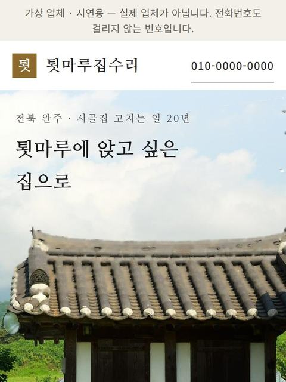
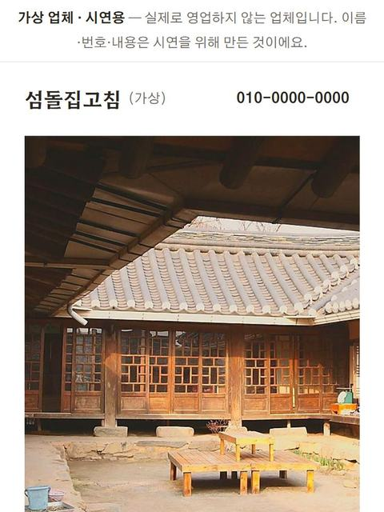

사장님 가게,
같이 만들어요.
손님이 3초 안에 알아보고, 30초 안에 연락하는 홈페이지를 만듭니다.


시범 운영으로 만든 가상 업체 화면이에요. 이름·번호는 시연용, 사진은 참고 이미지입니다.
이렇게 만들어요
- 1
이야기 듣기
가게로 찾아가거나 카카오톡으로 이야기를 들어요. 필요한 정보는 휴대폰 입력 양식 하나로 받습니다.
- 2
첫 시안
첫 시안은 하루 안에 보여 드리는 걸 목표로 해요. 가게 사진이 아직 없으면 어울리는 참고 사진으로 먼저 채우고, “이런 느낌으로 찍어 주세요” 하고 함께 보여 드려요.
- 3
고치기
보시고 “좋다”, “여기 고쳐 달라”만 말씀해 주세요. 마음에 드실 때까지 고칩니다.
- 4
오픈하고도 같이
오픈한 뒤에도 사이트가 잘 열리는지, 정보가 맞는지 매주 함께 챙겨요. 네이버 플레이스·카카오톡 채널 연결도 같이 해요.
받으시는 것
- 01
휴대폰에서 바로 열리는 홈페이지
전화·카카오톡 버튼까지, 손님이 막힘없이 연락하게.
- 02
우리 가게 손님만을 위한 기능 하나
예를 들어 손님이 궁금한 걸 고르면 상담 내용이 정리돼 바로 보내지는 것처럼.
- 03
사실로만 채운 홈페이지
후기·숫자·거래처를 지어내지 않고, 확인된 것으로 믿음을 드려요.
- 04
사장님의 말, 우리 가게의 모습
사장님 말투와 간판·가게 색을 그대로 살려요. 사진이 필요하면 직접 찍으러 갈 수 있어요.
- 05
사장님 안내 문서
무엇을 만들었고 앞으로 어떻게 챙기는지, 한 장으로 정리해 드려요.
홈페이지보다 더 쉽고 맞는 방법이 있으면, 그것부터 말씀드려요.
사장님께 도움이 되는 게 먼저예요.